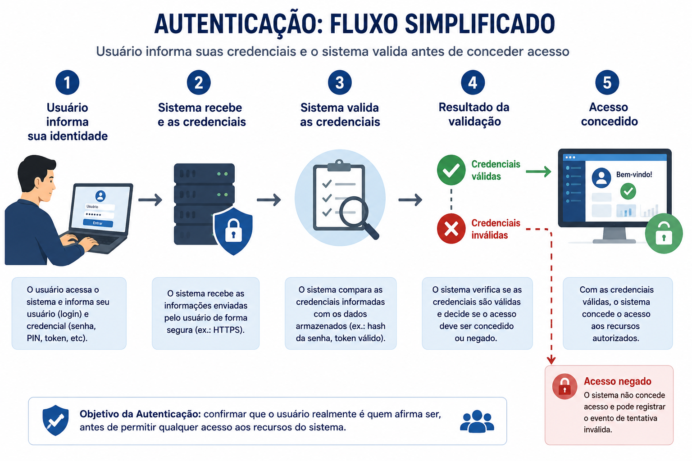
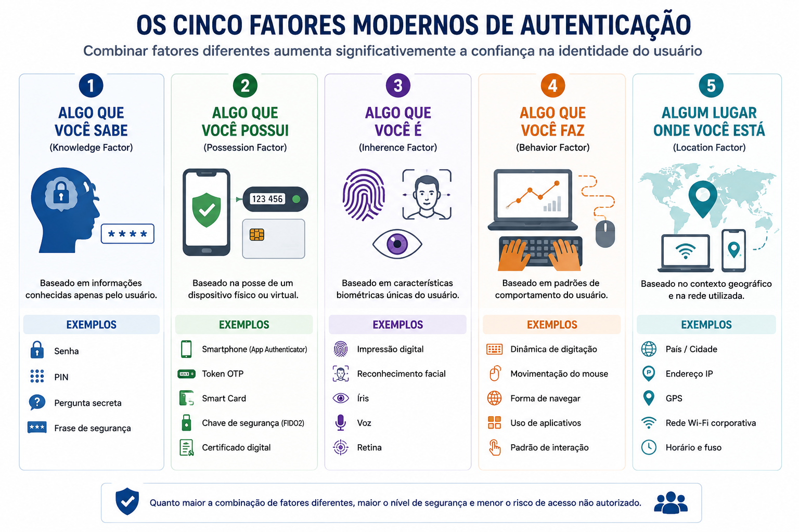
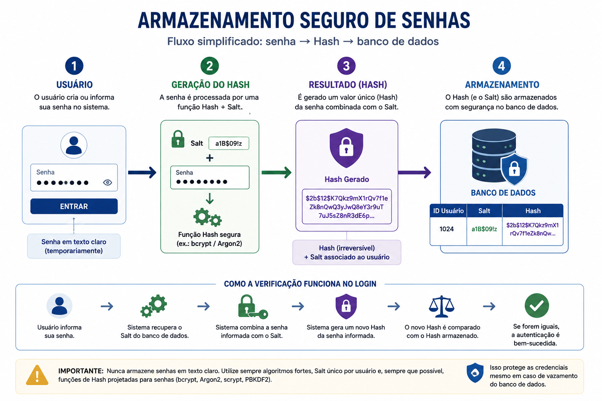
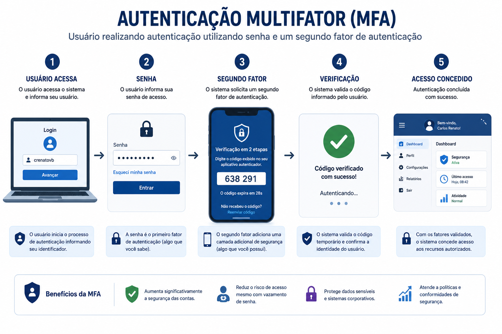
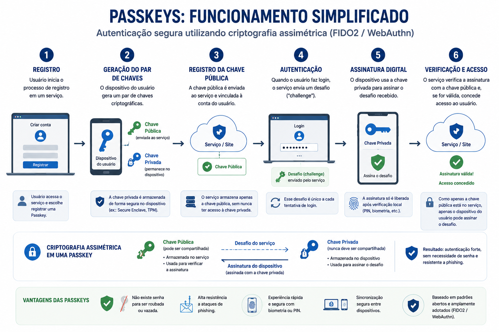
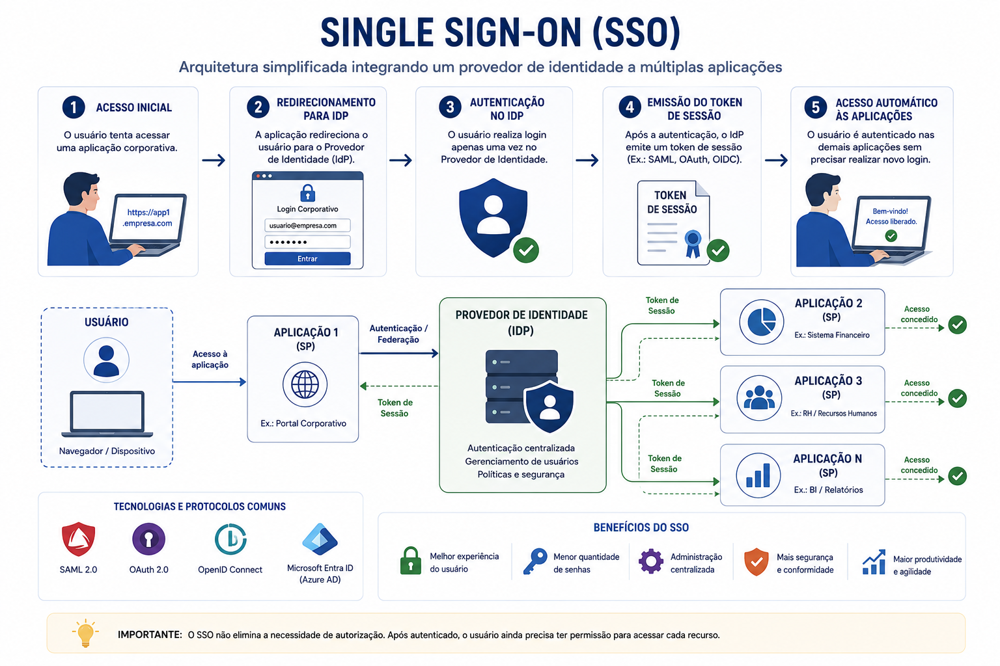
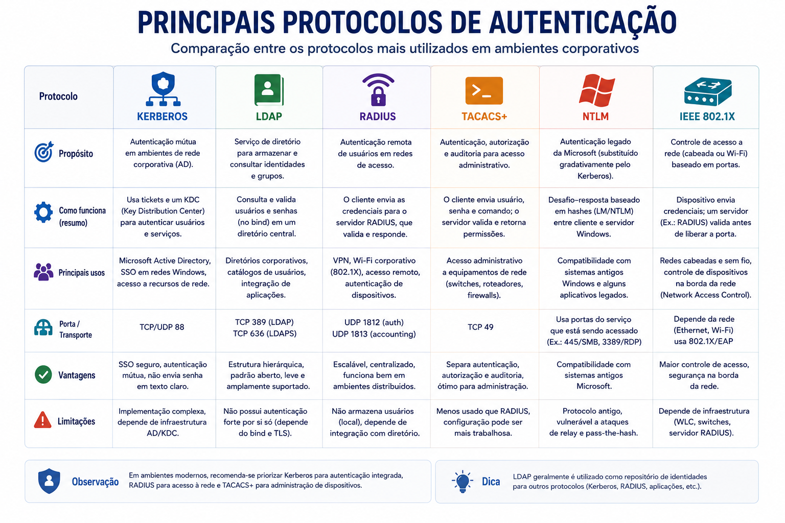
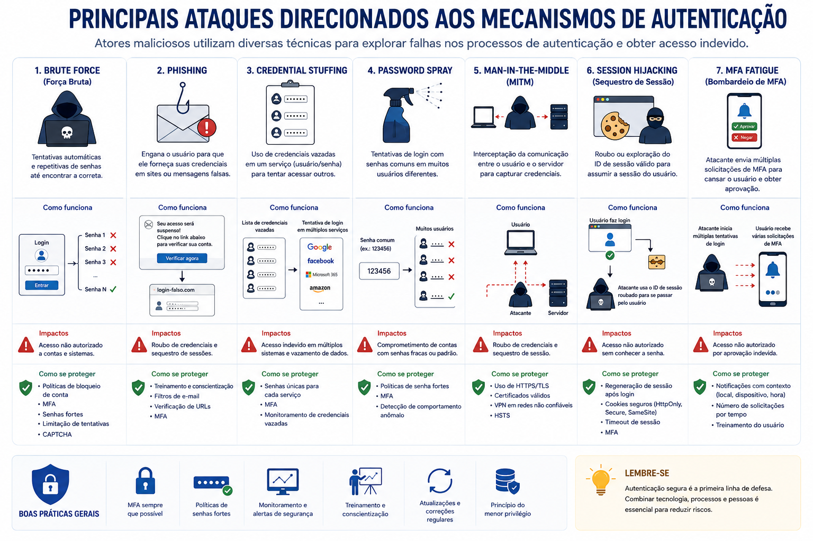
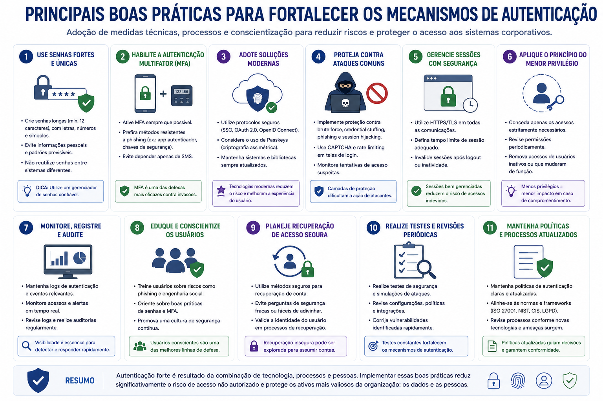

📋 Guia Rápido
Credenciais
Senha
MFA
Passkeys
Biometria
SSO
Kerberos
Certificados Digitais
📖 Resumo Executivo
Imagine chegar à recepção de uma empresa e afirmar ser um funcionário. Apenas dizer seu nome seria suficiente para entrar no Data Center ou acessar informações confidenciais?
Obviamente não. Antes de liberar qualquer acesso, a organização precisa confirmar que você realmente é quem afirma ser. Esse processo ocorre diariamente tanto no mundo físico quanto no ambiente digital e recebe o nome de Autenticação.
Sempre que realizamos login em um computador, acessamos um e-mail corporativo, utilizamos aplicativos bancários ou desbloqueamos um smartphone utilizando biometria, estamos executando um processo de autenticação.
Ao longo dos últimos anos, a autenticação evoluiu significativamente. As tradicionais senhas passaram a ser combinadas com códigos temporários, biometria, certificados digitais, tokens físicos e, mais recentemente, Passkeys, elevando o nível de segurança das identidades digitais.
Autenticação é o processo de verificar se um usuário realmente é quem afirma ser antes de conceder acesso a recursos computacionais.
Neste capítulo conheceremos os principais mecanismos utilizados para validar identidades, compreenderemos como funcionam os diferentes fatores de autenticação e veremos por que esse tema se tornou um dos pilares da Segurança da Informação moderna.
Apresentar os conceitos fundamentais relacionados à Autenticação, compreender seus diferentes fatores, conhecer os métodos utilizados atualmente pelas organizações e entender como tecnologias modernas reduzem significativamente o risco de comprometimento de identidades digitais.
🆔 O que é Autenticação?
Autenticação é o processo responsável por verificar a identidade de um usuário, dispositivo ou serviço antes da concessão de acesso a um recurso.
Seu principal objetivo é impedir que pessoas não autorizadas utilizem credenciais falsas ou roubadas para acessar sistemas, aplicações, bancos de dados e informações corporativas.
É importante destacar que autenticar não significa autorizar. Primeiro o sistema confirma quem é o usuário. Somente depois verifica quais permissões ele possui, conforme estudado no capítulo anterior sobre Controle de Acesso.

Autenticação responde à pergunta:
"Quem é você?"
Enquanto a Autorização responde:
"O que você pode fazer?"
Esses dois processos trabalham juntos, mas possuem objetivos
completamente diferentes.
🔄 Identificação × Autenticação × Autorização
Esses três conceitos costumam ser confundidos por profissionais iniciantes, porém representam etapas distintas dentro do Controle de Acesso.
Exemplos:
• usuário
• matrícula
Exemplos:
• senha
• biometria
• certificado
• token
Exemplos:
• leitura
• gravação
• administração
Embora ocorram em sequência durante um processo de login, cada uma dessas etapas possui funções distintas e complementares.
🔐 Os Fatores de Autenticação
Ao longo da evolução da Segurança da Informação, diferentes mecanismos foram desenvolvidos para confirmar a identidade dos usuários. Esses mecanismos são conhecidos como fatores de autenticação.
Quanto maior a quantidade de fatores utilizados, maior tende a ser a confiança de que a pessoa realmente é quem afirma ser. Esse conceito deu origem à Autenticação Multifator (MFA), hoje considerada uma das principais recomendações de segurança para ambientes corporativos.
Atualmente, cinco fatores de autenticação são amplamente reconhecidos na literatura de Segurança da Informação.

🧠 Algo que você sabe (Knowledge Factor)
O fator mais tradicional de autenticação baseia-se em uma informação conhecida apenas pelo usuário.
Historicamente, esse foi o mecanismo mais utilizado pelos sistemas computacionais e ainda permanece presente em grande parte das aplicações corporativas.
• PIN
• Pergunta secreta
• Frase de segurança
✔ Baixo custo
✔ Compatibilidade universal
• Reutilização
• Phishing
• Força Bruta
• Password Spraying
Embora continue sendo amplamente utilizado, esse fator isoladamente já não oferece um nível de proteção considerado adequado para ambientes críticos.
📱 Algo que você possui (Possession Factor)
Nesse modelo, a autenticação depende da posse de um dispositivo físico ou virtual previamente associado ao usuário.
Mesmo que um atacante descubra a senha da vítima, ele ainda precisará possuir o dispositivo utilizado como segundo fator.
• Token OTP
• Smart Card
• Chave FIDO2
• Certificado Digital
• VPN
• Microsoft 365
• Google Workspace
• AWS
• Azure
Aplicativos autenticadores como Microsoft Authenticator, Google Authenticator, Authy e Duo Mobile geram códigos temporários baseados em tempo (TOTP), amplamente utilizados em implementações de MFA.
👆 Algo que você é (Inherence Factor)
Esse fator utiliza características biométricas únicas do usuário para validar sua identidade.
O crescimento dos smartphones popularizou esse tipo de autenticação, tornando biometria uma tecnologia presente no cotidiano de milhões de pessoas.
• Face ID
• Reconhecimento facial
• Íris
• Retina
• Voz
✔ Rapidez
✔ Difícil compartilhamento
✔ Boa experiência do usuário
• Privacidade
• Custo
• Equipamentos específicos
Diferentemente das senhas, características biométricas não podem ser alteradas facilmente caso sejam comprometidas, exigindo cuidados especiais na sua proteção.
⌨ Algo que você faz (Behavior Factor)
Alguns sistemas modernos utilizam padrões de comportamento para identificar usuários durante o processo de autenticação.
Esses mecanismos analisam continuamente características como a forma de digitar, movimentar o mouse, caminhar ou interagir com dispositivos móveis.
• Movimentação do mouse
• Forma de caminhar
• Comportamento de navegação
• Fintechs
• Soluções antifraude
• Detecção contínua de identidade
🌍 Algum lugar onde você está (Location Factor)
O contexto geográfico também pode ser utilizado como fator de confiança durante uma autenticação.
Nesse caso, o sistema considera informações como localização, rede utilizada, endereço IP, país, horário e dispositivo para avaliar se a tentativa de acesso representa um comportamento esperado.
• Cidade
• GPS
• Endereço IP
• Rede Corporativa
• VPN
• Microsoft Entra ID
• Google Workspace
• Cloud IAM
• Soluções de Risco Adaptativo
Diversas plataformas modernas de IAM avaliam continuamente o contexto da autenticação. Um login realizado a partir de um país não habitual, utilizando um dispositivo desconhecido ou uma rede considerada insegura pode exigir fatores adicionais de autenticação ou até mesmo ser bloqueado automaticamente.
🔑 Autenticação Baseada em Senhas
Durante décadas, a senha foi o principal mecanismo utilizado para confirmar a identidade dos usuários. Mesmo com o surgimento de novas tecnologias, ela continua presente na maioria dos sistemas corporativos e aplicações utilizadas diariamente.
Seu funcionamento é relativamente simples. O usuário informa sua identidade e sua senha. O sistema compara essa informação com os dados armazenados e, caso sejam compatíveis, a autenticação é considerada bem-sucedida.
Embora esse processo pareça simples, armazenar senhas diretamente em um banco de dados representaria um enorme risco para qualquer organização. Por esse motivo, sistemas modernos jamais armazenam senhas em texto claro.

Boas implementações nunca armazenam a senha original do usuário. Apenas o valor Hash é gravado no banco de dados.
#️⃣ Hash e Armazenamento Seguro de Senhas
Quando um usuário cria uma senha, ela passa por uma função Hash antes de ser armazenada.
O resultado desse processamento é uma sequência única de caracteres conhecida como Hash. Como estudado no capítulo de Criptografia, funções Hash são unidirecionais, ou seja, não existe um processo matemático para recuperar a senha original a partir do Hash.
Sempre que o usuário realiza um novo login, a senha digitada é processada novamente pela mesma função Hash. O sistema então compara o novo valor com aquele armazenado anteriormente.
Se ambos forem idênticos, a autenticação é realizada com sucesso.
🧂 O Papel do Salt
Embora o uso de funções Hash aumente significativamente a segurança, ele não elimina completamente os riscos.
Senhas iguais sempre produzem exatamente o mesmo Hash. Isso permite que atacantes utilizem tabelas pré-calculadas, conhecidas como Rainbow Tables, para descobrir senhas comuns.
Para reduzir esse risco, sistemas modernos adicionam um valor aleatório chamado Salt antes da geração do Hash.
Como cada usuário recebe um Salt diferente, duas pessoas que utilizem exatamente a mesma senha produzirão Hashes totalmente distintos.
Usuário A
Senha: senha123
Salt: X7@P9
→ Hash A
Usuário B
Senha: senha123
Salt: K4#ZT
→ Hash B
Mesmo utilizando a mesma senha, os Hashes serão completamente diferentes.
⚙ Algoritmos Modernos para Proteção de Senhas
Nem todas as funções Hash são adequadas para armazenamento de senhas. Algoritmos rápidos demais facilitam ataques de força bruta utilizando hardware especializado.
Por esse motivo, aplicações modernas utilizam algoritmos específicos para proteção de credenciais, projetados para exigir maior tempo de processamento e dificultar ataques automatizados.
Na maioria dos grandes vazamentos de credenciais ocorridos nos
últimos anos, o problema não estava na existência de senhas, mas
na forma como elas eram armazenadas. Organizações que utilizavam
algoritmos obsoletos, como MD5 ou SHA-1, tiveram milhões de
credenciais comprometidas.
Atualmente, recomenda-se o uso de:
Argon2
bcrypt
PBKDF2
Sempre combinados com Salt exclusivo
para cada usuário.
🛡 Autenticação Multifator (MFA)
Mesmo utilizando senhas fortes, nenhuma credencial está totalmente livre de comprometimento. Ataques de phishing, vazamentos de dados, malwares e reutilização de senhas podem permitir que criminosos obtenham acesso às credenciais de um usuário legítimo.
Para reduzir esse risco surgiu a Autenticação Multifator (Multi-Factor Authentication – MFA), que combina dois ou mais fatores independentes para confirmar a identidade do usuário.
Dessa forma, mesmo que um atacante descubra a senha da vítima, ele ainda precisará superar um segundo mecanismo de autenticação para obter acesso ao sistema.

Sempre que possível, prefira aplicativos autenticadores ou chaves de segurança em vez de códigos enviados por SMS, pois estes oferecem maior resistência a ataques de interceptação e troca fraudulenta de chips (SIM Swap).
👆 Autenticação Biométrica
A biometria tornou-se um dos mecanismos de autenticação mais utilizados nos últimos anos. Smartphones, notebooks e sistemas corporativos utilizam características físicas ou comportamentais para confirmar a identidade dos usuários.
Ao contrário das senhas, características biométricas são únicas e não dependem da memória do usuário, proporcionando maior conveniência durante o processo de autenticação.
Embora a biometria aumente significativamente a segurança, ela não deve ser considerada infalível. Sempre que possível, deve ser utilizada em conjunto com outros fatores de autenticação.
🔑 Passkeys e Autenticação sem Senha
Nos últimos anos surgiu uma nova abordagem conhecida como Passwordless Authentication, cujo objetivo é eliminar a dependência das senhas tradicionais.
Entre as tecnologias mais promissoras estão as Passkeys, baseadas nos padrões FIDO2 e WebAuthn. Em vez de memorizar senhas, o usuário utiliza seu próprio dispositivo para confirmar sua identidade.
Internamente, o dispositivo cria um par de chaves criptográficas. A chave privada permanece protegida no aparelho, enquanto a chave pública é registrada no serviço utilizado.

• Microsoft
• Apple
• GitHub
• Amazon
• Diversos serviços modernos.
Especialistas consideram as Passkeys uma das maiores evoluções da autenticação nas últimas décadas. Como não existe uma senha armazenada no serviço, ataques como phishing, reutilização de credenciais e Credential Stuffing tornam-se muito menos eficazes, reduzindo significativamente o risco de comprometimento das contas.
🌐 Single Sign-On (SSO)
À medida que as organizações passaram a utilizar dezenas ou até centenas de aplicações, tornou-se inviável exigir que os usuários realizassem um novo processo de autenticação para cada sistema.
Para resolver esse problema surgiu o conceito de Single Sign-On (SSO), que permite ao usuário realizar apenas uma autenticação e, posteriormente, acessar diversas aplicações autorizadas sem necessidade de novos logins.
Além de melhorar significativamente a experiência do usuário, o SSO reduz o número de senhas administradas e facilita a gestão centralizada das identidades.

• Menor quantidade de senhas.
• Administração centralizada.
• Maior produtividade.
• OAuth 2.0
• OpenID Connect
• Google Workspace
• Okta
• Keycloak
• Ping Identity
🖥 Protocolos de Autenticação
Grandes organizações utilizam protocolos específicos para realizar a autenticação de usuários, dispositivos e serviços em diferentes tipos de infraestrutura.
Embora todos tenham o mesmo objetivo, cada protocolo foi criado para atender cenários específicos e apresenta características próprias.

🚨 Principais Ataques contra Autenticação
Como a autenticação representa a porta de entrada para sistemas corporativos, ela também se tornou um dos principais alvos dos criminosos cibernéticos.
Na maioria dos casos, os ataques não exploram vulnerabilidades nos algoritmos de autenticação, mas sim erros humanos, senhas fracas, reutilização de credenciais ou configurações inadequadas.

🛡 Boas Práticas de Autenticação

• Implementar MFA para contas privilegiadas e usuários finais.
• Utilizar Passkeys sempre que disponíveis.
• Adotar gerenciadores de senhas.
• Utilizar algoritmos modernos para armazenamento de senhas.
• Bloquear tentativas sucessivas de autenticação.
• Monitorar eventos de login em tempo real.
• Implementar autenticação adaptativa baseada em risco.
• Revisar periodicamente políticas de autenticação.
📚 O que aprendemos?
- O conceito de Autenticação.
- A diferença entre Identificação, Autenticação e Autorização.
- Os cinco fatores modernos de autenticação.
- Como funciona o armazenamento seguro de senhas utilizando Hash e Salt.
- Os algoritmos modernos para proteção de credenciais.
- O funcionamento da Autenticação Multifator (MFA).
- As vantagens da biometria e das Passkeys.
- Os conceitos de Single Sign-On (SSO).
- Os principais protocolos de autenticação corporativos.
- As ameaças e boas práticas relacionadas à autenticação.
🚀 Próximo Capítulo
Neste capítulo aprendemos como um sistema confirma a identidade de um usuário antes de conceder acesso aos seus recursos.
Entretanto, uma vez autenticado, surge uma nova questão:
Quais recursos esse usuário poderá acessar?
Essa decisão pertence ao processo de Autorização, tema do próximo capítulo da série.
Estudaremos como permissões são concedidas, como políticas de acesso são aplicadas e como tecnologias modernas implementam controles granulares para proteger informações corporativas.
➡ Ler o próximo capítulo
✅ 🔺 Tríade CIA
✅ 🔒 Confidencialidade
✅ 🛡 Integridade
✅ ⚡ Disponibilidade
✅ 🔐 Criptografia
✅ 👥 Controle de Acesso
✅ 🆔 Autenticação
➡ ✔ Autorização
⬜ 🔑 Autenticação Multifator (MFA)
⬜ 🏛 Identity and Access Management (IAM)
⬜ ☁ Zero Trust
⬜ 🔐 Privileged Access Management (PAM)
⬜ 🌐 Active Directory e Microsoft Entra ID
⬜ 🔑 Single Sign-On e Federação de Identidade